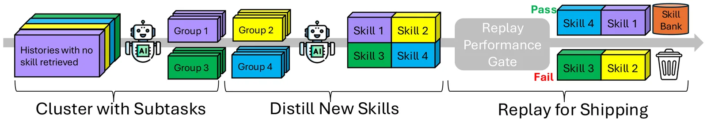
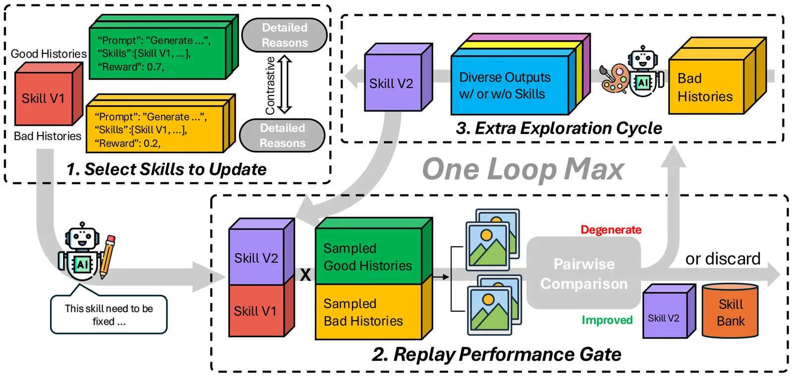
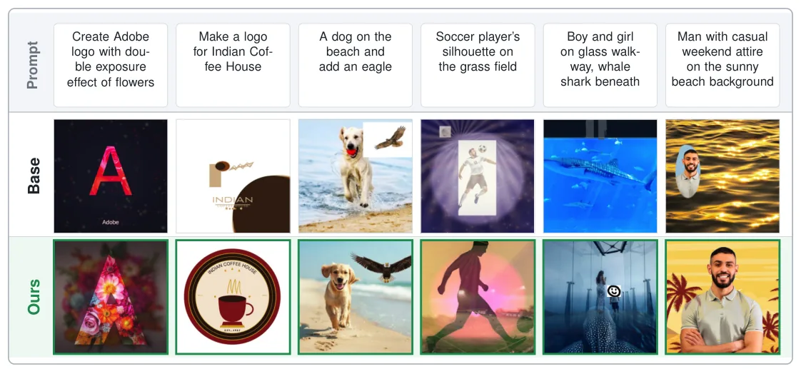

O problema: design gráfico é longo, editável e difícil de avaliar
Modelos generativos produzem imagens realistas a partir de texto, mas design gráfico profissional exige artefatos estruturados — camadas, vetores, máscaras — que o designer possa inspecionar e editar depois. Isso transforma a tarefa em um problema de decisão sequencial: o agente arranja assets, manipula tipografia, constrói máscaras, aplica efeitos e revisa decisões anteriores sem perder a editabilidade. Um único design pode exigir dezenas de operações interdependentes.
Aprender isso a partir de tráfego real é difícil por três razões. Primeiro, o feedback terminal — a imagem final — identifica mal qual decisão causou sucesso ou falha, um problema clássico de atribuição de crédito em horizontes longos. Segundo, os resultados são difíceis de verificar: os prompts misturam requisitos concretos (texto, cores, posições) com critérios subjetivos (hierarquia, composição, estilo) que avaliadores automáticos capturam apenas parcialmente. Terceiro, ao contrário de código com testes executáveis, design não tem oráculo de sucesso.
Aprendizado supervisionado precisa de demonstrações caras; otimização baseada em recompensa precisa lidar com atribuição de crédito e sinais ruidosos, especialmente quando o modelo de fundação está hospedado externamente ou é impraticável atualizar. Este paper propõe uma alternativa: tratar a memória procedural em torno de um modelo congelado como o alvo de aprendizado.
A ideia: memória procedural que evolui sem mexer nos pesos
O sistema Designer-RSI mantém o modelo de linguagem congelado e acumula experiência em um banco externo de habilidades (skill bank) escritas em linguagem natural. Cada habilidade é um procedimento reutilizável — por exemplo, 'double exposure: extrair sujeito, construir máscaras, misturar outro asset, refinar' — que o modelo pode adaptar, reordenar ou aplicar parcialmente. Uma habilidade fica entre uma chamada de ferramenta atômica e uma trajetória inteira: específica o suficiente para guiar execução, geral o suficiente para transferir.
A memória evolui em duas direções. Widening (alargamento) identifica subtarefas recorrentes que o banco atual não cobre e as destila em novas habilidades. Deepening (aprofundamento) revisa habilidades existentes que aparecem repetidamente em falhas, contrastando execuções que falharam com usos bem-sucedidos da mesma habilidade. Nenhum dos dois mecanismos atualiza pesos; apenas a biblioteca de habilidades muda.
O agente controla equivalentes de Adobe Photoshop, Illustrator e InDesign através de mais de 230 ferramentas. O modelo de fundação, as ferramentas, o renderizador, o avaliador e os papéis de evolução permanecem fixos. Mas uma mudança só persiste se melhorar o sistema, o que é difícil porque avaliadores baseados em LLM têm vieses documentados de posição e ordem. A solução é um replay gate: cada candidato a habilidade — nova ou revisada — é testado em um conjunto de prompts; a mudança é aceita apenas se consertar falhas sem regredir sucessos observados.

Widening: criar habilidades para lacunas recorrentes
Widening começa com subtarefas não cobertas: quando o agente falha, um modelo de reflexão analisa a trajetória e identifica o que faltou — por exemplo, 'aplicar gradiente radial' ou 'alinhar texto em curva'. Essas subtarefas são agrupadas por similaridade semântica usando embeddings; clusters recorrentes (que aparecem pelo menos k_min vezes no tráfego) viram candidatos a novas habilidades.
Cada candidato é destilado em linguagem natural: o modelo recebe os históricos do cluster e gera uma habilidade genérica que captura o padrão comum. Esse candidato passa pelo replay gate: é testado em um subconjunto dos prompts que motivaram sua criação. Se a nova habilidade aumentar a taxa de sucesso sem prejudicar casos que já funcionavam, ela entra no banco. Caso contrário, é descartada.
Widening expande cobertura, mas introduz ruído: habilidades recém-criadas não passaram por verificação em múltiplas tentativas e podem causar recuperações falso-positivas. Por isso, widening e deepening são complementares.

Deepening: refinar habilidades que falham
Deepening foca em habilidades que já existem no banco mas aparecem repetidamente em trajetórias que falharam. Para cada habilidade problemática, o sistema coleta dois conjuntos de históricos: execuções que usaram a habilidade e falharam, e execuções que usaram a mesma habilidade e tiveram sucesso.
Um modelo de reflexão contrasta os dois conjuntos e gera uma versão revisada da habilidade — por exemplo, adicionando um passo de validação, reordenando operações ou especificando melhor um parâmetro. Essa revisão também passa pelo replay gate: é testada nos piores prompts que falharam com a versão antiga. Se a revisão consertar falhas sem regredir sucessos, ela substitui a habilidade antiga no banco. Se for rejeitada, o sistema pode disparar um ciclo opcional de exploração one-shot para tentar uma reescrita mais radical.
Deepening converte cobertura em confiabilidade: habilidades que expandiram o banco via widening são refinadas até funcionarem de forma robusta.

Configuração experimental: cinco rodadas, 1.406 prompts reais
Os autores comparam o sistema EVOLVE (com banco de habilidades) contra BASE (sem habilidades), mantendo o agente subjacente fixo. Três modelos de fundação foram testados: Claude-Opus-4.6 e Claude-Sonnet-4 via Amazon Bedrock, e Qwen3.6-27B via vLLM em 8 GPUs A100. Configurações de raciocínio ficaram fixas em geração, evolução e avaliação; os modelos Claude usaram baixo esforço de pensamento, limitado a 2.000 e 5.000 tokens para Opus e Sonnet, respectivamente. Todos tiveram cap de 900 segundos por prompt.
Cada rodada de evolução consumiu cerca de 300 prompts de design extraídos de tráfego real de usuários e variantes aumentadas por LLM, repassados pelo agente para produzir trajetórias avaliadas que alimentam widening e deepening. Um prompt de design é uma solicitação em linguagem natural descrevendo o artefato, requisitos concretos (texto, cores, posições) e objetivos estilísticos; pode ter de poucas palavras a um parágrafo completo.
A avaliação usou um conjunto separado de 200 prompts escritos por humanos, disjunto dos prompts de evolução e fixo nas cinco rodadas: após cada rodada, o banco resultante foi congelado e testado no mesmo conjunto, de modo que reescritas, adições e desempenho por rodada fossem medidos contra um alvo constante. O banco começou com 76 habilidades derivadas de documentação e cresceu para 139 ao longo de cinco rodadas, totalizando 1.869 trajetórias avaliadas automaticamente, sem atualização de pesos e sem rótulos humanos.
Benchmarks externos: T2I geral e design especializado
Os autores avaliaram duas categorias de benchmarks, amostrando 300 prompts de cada. Para capacidade geral de texto para imagem (T2I), usaram GenEval2 (raciocínio composicional sobre objetos e relações espaciais), DPG-Bench (seguimento denso de prompt) e OneIG-EN/OneIG-ZH (alinhamento sujeito-elemento multilíngue e renderização de texto). Métricas: média geométrica de Soft-TIFA no GenEval2, média aritmética de Soft-TIFA no DPG-Bench e VQAScore no OneIG, julgados por Qwen3-VL-8B-Instruct sobre gerações bem-sucedidas.
Para capacidade de design, amostraram dados de avaliação de OpenCOLE, GraphicBench, CreatiDesign e BannerRequest400, que cobrem planejamento multi-passo, restrições de layout e texto, e qualidade visual. Aqui reportaram taxas de vitória pareadas EVOLVE-vs-BASE julgadas por GPT-5.4 em comparação cega de duas ordens para mitigar viés de posição.
Resultados em T2I geral: até +26,6 pontos de taxa de sucesso
Em tarefas gerais de T2I, equipar agentes com o banco de habilidades evoluído trouxe melhorias substanciais. Três conclusões principais: primeiro, qualidade de geração melhorou em média em todos os modelos. EVOLVE elevou a qualidade média em +3,83, +7,70 e +9,67 para Claude-Opus-4.6, Claude-Sonnet-4 e Qwen3.6-27B, respectivamente, embora benchmarks individuais possam regredir. Os scores absolutos altos do Qwen devem ser interpretados junto com sua taxa de sucesso mais baixa, já que qualidade é avaliada apenas em saídas bem-sucedidas e reflete desproporcionalmente prompts mais fáceis.
Segundo, EVOLVE melhora confiabilidade de execução na maioria dos benchmarks. O efeito é mais forte para Claude-Sonnet-4, cuja taxa de sucesso subiu de 72,7% para 99,3% no GenEval2 (+26,6 pontos percentuais) e de 82,7% para 100% no DPG-Bench (+17,3 pontos). Terceiro, overhead de latência permanece modesto: EVOLVE adiciona apenas 3,4% a 6,2% de overhead médio de latência entre os modelos, e pode ocasionalmente reduzir tempo de geração (por exemplo, 113 para 82 segundos para Sonnet no DPG-Bench).
Resultados em design especializado: até 71,7% de vitórias
Em tarefas especializadas de design gráfico, o agente EVOLVE superou BASE de forma consistente. Para Claude-Opus-4.6, a evolução garantiu 67,6% de taxa de vitória geral, com pico de 71,7% no CreatiDesign. Claude-Sonnet-4 alcançou 61,8% de vitória geral. Qwen3.6-27B obteve 62,8% geral, mas teve desempenho próximo ao empate no GraphicBench (49,0%).
Essas margens indicam que a evolução é particularmente eficaz em resolver restrições de design complexas e multi-passo que geração zero-shot padrão luta para lidar. Os benchmarks de design cobrem desde planejamento de layout até renderização precisa de texto e composição visual, áreas onde procedimentos reutilizáveis oferecem vantagem clara sobre raciocínio ad-hoc.
Dinâmica de evolução: widening e deepening são complementares
A evolução de habilidades alterna entre widening e deepening sem agendamento manual, guiada por um trade-off cobertura-confiabilidade. Primeiro, widening exige recorrência: uma habilidade faltante só é criada após k_min falhas repetidas no tráfego. Segundo, widening não refinado introduz ruído: habilidades recém-criadas expandem cobertura mas carecem de verificação multi-tentativa, ocasionalmente causando recuperações falso-positivas ou degradação de desempenho.
Os autores testaram os dois mecanismos isoladamente em 200 prompts retidos do benchmark de tráfego de usuários. Widening sozinho alcançou 49,4% de taxa de vitória sobre o agente sem habilidades; deepening sozinho alcançou 48,6%. A combinação dos dois atingiu 58,5% (p=0,025), confirmando que widening e deepening são eficazes em combinação: criar expande cobertura, reescrever converte essa cobertura em confiabilidade.

Exemplos qualitativos: double exposure, logos e composições
A figura 7 mostra seis comparações lado a lado. No prompt 'Create Adobe logo with double exposure effect of flowers', BASE produz uma composição simples; EVOLVE aplica corretamente máscaras e blending para criar o efeito de dupla exposição. No prompt 'Make a logo for Indian Coffee House', BASE gera texto genérico; EVOLVE constrói um logo estruturado com tipografia adequada e elementos visuais.
Em 'A dog on the beach and add an eagle', BASE coloca os dois elementos de forma desarticulada; EVOLVE compõe a cena com hierarquia visual clara. Em 'Soccer player's silhouette on the grass field', BASE falha em criar a silhueta; EVOLVE extrai o sujeito, constrói máscara e posiciona sobre o campo. Esses exemplos ilustram como procedimentos reutilizáveis — extração de sujeito, construção de máscara, blending, composição hierárquica — transferem entre prompts diferentes.
O que o paper não mostra: limitações e escopo
Primeiro, o sistema depende de um avaliador automático para gerar recompensas, e o paper reconhece que avaliadores baseados em LLM capturam critérios subjetivos apenas parcialmente. O replay gate mitiga vieses de posição e ordem, mas não elimina ruído de avaliação; mudanças no avaliador podem afetar a evolução.
Segundo, os experimentos usaram modelos de fronteira (Claude Opus/Sonnet e Qwen3.6-27B) e não está claro como o sistema se comportaria com modelos menores ou menos capazes. O Qwen teve taxas de sucesso mais baixas em alguns benchmarks, sugerindo que a memória procedural pode não compensar totalmente limitações de capacidade base.
Terceiro, o paper não explora quantas rodadas de evolução são necessárias para convergência, nem se o banco de habilidades continua melhorando indefinidamente ou satura. As cinco rodadas mostraram ganhos consistentes, mas a curva de aprendizado de longo prazo permanece em aberto. Quarto, o sistema foi avaliado em inglês e chinês (OneIG-ZH), mas não em outras línguas; a transferência multilíngue de habilidades não foi testada sistematicamente.
Quinto, o paper não compara com fine-tuning supervisionado ou reinforcement learning from human feedback (RLHF), que seriam baselines naturais se demonstrações ou preferências humanas estivessem disponíveis. A vantagem do Designer-RSI é operar sem rótulos humanos e sem atualizar pesos, mas o custo dessa restrição em relação a métodos que têm acesso a supervisão humana não foi quantificado.
Por que isso importa
Designer-RSI mostra que é possível adaptar agentes continuamente a partir de tráfego real sem fine-tuning, rótulos humanos ou acesso a pesos do modelo. Isso é relevante para cenários em que modelos de fundação são hospedados externamente (via API) ou atualizações de peso são caras ou impraticáveis. A memória procedural em linguagem natural é interpretável: designers podem inspecionar, editar ou desabilitar habilidades individuais, algo impossível com pesos de rede neural.
O replay gate oferece uma solução prática para evolução sob feedback ruidoso e não verificável, um problema comum em domínios criativos e subjetivos. A complementaridade entre widening e deepening — expansão de cobertura seguida de refinamento — pode generalizar para outros domínios de agentes de longo horizonte, como automação de escritório, suporte técnico ou criação de conteúdo.
Finalmente, o paper demonstra que 230+ ferramentas de software profissional podem ser controladas por um modelo de linguagem através de memória procedural, abrindo caminho para agentes que operam aplicativos complexos sem precisar de modelos especializados por aplicativo. A abordagem é modular: ferramentas, modelo, avaliador e mecanismos de evolução podem ser substituídos independentemente.
O que fica
- Sistema evolui banco de 76 para 139 habilidades em linguagem natural a partir de 1.406 prompts reais, sem fine-tuning nem rótulos humanos, elevando taxa de sucesso de 72,7% a 99,3% no GenEval2 (Claude-Sonnet-4).
- Widening cria habilidades para lacunas recorrentes; deepening refina habilidades que falham. Combinados, atingem 58,5% de vitórias vs. agente sem habilidades (p=0,025); isolados, 49,4% e 48,6%.
- Replay gate filtra mudanças: aceita apenas revisões que consertam falhas sem regredir sucessos, estabilizando evolução sob feedback ruidoso de avaliadores automáticos.
- Overhead de latência é modesto (3,4% a 6,2%). Memória procedural é interpretável: habilidades podem ser inspecionadas, editadas ou desabilitadas, ao contrário de pesos de rede neural.
Paper original: Designer-RSI: Evolving Procedural Memory from User Traffic for Agentic Graphic Design
Comentários
Nenhum comentário ainda. Seja o primeiro.